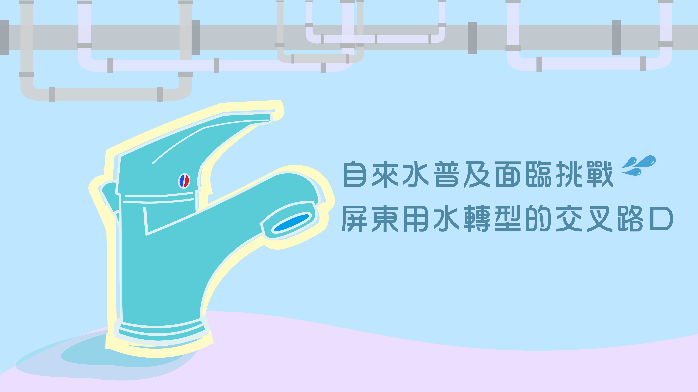

祈禱室中潛心禮拜的于麗娜。（圖／彭勝緯攝）
文化小物
摘下穆斯林標籤： 我是我，獨一無二
NT$3480
イスラム信徒にとっては、豚は汚らわしい動物に他ならない
イスラム教徒が食べているものや、それを食べる方法についてより深く知ることにもつながります
加入購物車
商品介紹
政府新南向政策施行至今，來台交換的外籍生愈來愈多，其中也不乏信奉伊斯蘭教的學生，然而，政大的穆斯林在哪裡？他們隱身在人群間，或披著頭巾在校園穿梭。揭開穆斯林的面紗，與社會過往對伊斯蘭教的刻板印象，或許我們才得以發現他們也有著平凡而踏實的日常，各式稀鬆平常的興趣—發現他們與你我無異。
你沒想像過的那「衣」些事
綜院外一隅的長椅上，就讀於IDAS（亞太研究英語博士學位學程）、來自印尼的于麗娜被溫婉的玫瑰色布袍圍繞著——Jilbab上繡著精巧花紋，從頭頂垂墜至腳部。她一邊比畫著自己的衣著，說：「就和一般人一樣地（穿）。」
和一般人一樣，是于麗娜作為一位穆斯林的自述。人們往往在穆斯林身上貼上一張張的標籤，卻忘記標籤底下都是如同你我一般的人。
隨著時代演進，近年穆斯林的穿著規範不再那麼硬性、不容打破。「因為現在比較現代化，穿著已經沒有那麼嚴苛了啦！」資管二、摩洛哥混血的安識綸語帶輕鬆地說。梳著油頭的他，笑盈盈地指著自己身上的黑針織毛衣及深藍牛仔褲說，「不過男生（在穿著上一直）沒什麼禁忌啦。」
同樣出生在摩洛哥的經濟系交換生Basma，一身直紋白毛衣加身配上黑褲，簡單舒適的黑白穿搭，一眼望去活脫是位青春洋溢的花季少女，她自信大方地說：「我也是個青少年，會每天隨心地打扮自己，天氣熱了就穿T-shirt、短褲，天冷就加件毛衣、戴條圍巾。」她提到，也不是每個伊斯蘭教國家都會有嚴格的服裝規定，例如在摩洛哥，女生不強制佩戴頭巾，可依家族或個人習慣選擇。
穆斯林女性所披戴的頭巾有著因地區而異的多種樣式。 圖／林傑立製
社會大眾的想像中，穆斯林頭巾的形象總是一片漆黑，然于麗娜與多名受訪者都表示，在他們的家鄉，頭巾不但有五花八門的樣式，布料顏色也相當繽紛，儼然成為日常穿著打扮中重要的一角，而她們也與你我一樣，會為了衣著搭配而費盡苦心。
穆斯林女性的傳統服飾並非一成不變，樣式與花紋除了大眾常見的黑色外，也不乏繽紛的花布，或是簡單純樸的素色布料。（圖／林傑立製）
單調飲食日常 別無選擇的穆斯林生
用餐時間，憩賢樓總是聚集著許多學生等著飽餐一頓。其中有一群人，可能皮膚黝黑、濃眉大眼；或是頭戴面紗、長衣長褲；也或許外貌衣著與眾人無異；他們的共通點是，即便面對憩賢樓內其他菜色多樣化的店家，他們卻始終對餐廳做出一致的選擇，這些穆斯林總是不假思索地排在素還真的隊列之中。然而，這些素還真的「忠實顧客」，之所以對素還真如此忠貞不二——其實是別無選擇。
「政大就是美食沙漠啊。」相較於台大、師大，政大貧瘠的飲食環境常被師生詬病，許多人對三餐抱著將就的態度，認為美食要不是距離遙不可及，就是價錢高不可攀；但與此同時，穆斯林們卻沒有挑嘴的餘地……
于麗娜緩緩地看向天空、雙手交疊，稍顯激動地說，自己在印尼老家時，能夠嚐到各式異國料理，她有很多常吃、喜歡吃的食物，更能夠毫無顧忌地大快朵頤。心理三、來自土耳其的魏熙純也表示，來到政大後非常想念土耳其菜，畢竟她現在的生活，只有素還真、Subway，或者自帶便當三種選擇，實在很單調。
由於伊斯蘭教義對食物有著嚴格規定，在台灣或其他非伊斯蘭國家的環境下，穆斯林學生的三餐選擇常僅剩素食和海鮮。「我們很多東西不能吃。」安識綸說，除海鮮不受限制外，豬肉及酒精則是完全禁止，其他像是牛、羊等肉品還需要有清真認證才行。面對學校附近幾乎沒有清真認證餐點，「素食（的話）附近就素還真，外面餐廳就點海鮮。」他說這就是他的三餐。
除了一日三餐外，對於一般大學生來說，熬夜趕報告配上一支支閃著油光的烤場肉串，或者在夜唱時啃著各式炸物，宵夜時光也屬精彩大學生活的一部分。但身為穆斯林，于麗娜卻感嘆道，即便夜間想買個食物充飢解饞，也遍尋無門，「學生餐廳過了營業時間就關閉。即便去便利商店買東西，能夠選擇的品項其實也有限。」
考量穆斯林學生的飲食需求，國合處長秘書任怡心表示，校方曾商議在校內設置清真食物自動販賣機（最後廠商仍因商業考量而選址於台北車站），更整理一份雙北清真餐廳地圖，放置於國際交流協會官網（隸屬於國合處，簡稱IA）供外賓參考。對此，于麗娜坦言：「清真餐廳（的消費）都是中高檔次，價格並不是那麼親民，沒辦法天天吃。」她也進一步提到：「販賣機的商品就只是零嘴，但我們（日常生活中）需要的不是點心，而是正經的三餐。如果能夠（在校內）開一間清真餐廳，我們真的會很開心。」
在素食學生餐廳「素還真」購買午餐的魏熙純。（圖／陳貞蓁攝）
穆斯林的飲食守則——清真、HALAL。（圖／林傑立製）
恪守清真 伊斯蘭包容環境從理解做起
看似平淡無奇的三餐選擇，或是點綴夜生活的宵夜日常，卻全都成了穆斯林遙不可及的校園生活，然而從另一角度來說，穆斯林對於食物規範的恪守與追求，也展現了他們對於信奉伊斯蘭教的虔誠。
「清真（HALAL），其實可以理解為clean，並且有兩個層面，食物來源及處理方式的clean，以及心靈上、對於宗教的clean。」魏熙純解釋道。
「就像美國人常說：『you are what you
eat（人如其食）』，一旦破戒，你的虔誠將不被他人認可長達40天。」于麗娜語氣肯定地覆述：「40天。」因此即使面臨著食物選擇稀少的窘境，穆斯林們仍堅守著戒律。鑽研伊斯蘭教文化多年的民族系教授張中復，侃侃而談道：「一神信仰的伊斯蘭教，非常強調信仰與生活的結合，這屬於教義的一部分。」張中復強調，重點是包容他們對宗教的虔誠，他舉例說明，如果有位穆斯林學生舉手說他要去禮拜，老師總不能強制他坐在位子上不准去，「彼此之間的互動，應該建立在理解和相互尊重上。」
聲聲惦麥加 祈禱空間在政大
清晨四五點的鬧鈴響起，這時的我們仍在沉沉睡夢中，但全世界的穆斯林卻已俐落起身，開始洗淨身體，或在家裡，或前往清真寺，打起精神，虔誠地朝麥加的方向禱告，這便是穆斯林的日常。
五功之一的禮拜，對穆斯林來說是與真主阿拉溝通，及謹記教義的例行儀式，為確保祈禱前的身心保持純潔，須事先進行「小淨」。張中復比手畫腳，生動地解說道：「小淨要洗手到肘，抹腳到小腿，再洗頭嗆鼻，過程中不可以被打擾。」
五功中「禮功」（即禮拜）的進行順序。（圖／吳卓玲製）
穆斯林對宗教的虔誠，不僅展現於種種禮拜的規範，更展現在穆斯林對「祈禱空間」的細節要求。
走到樂活小舖二樓，有扇白色藍邊的門，牆面掛有一只黑色門牌。門牌上標有新月符號和祈禱室字樣，這是國合處為因應穆斯林的宗教需求，於2017年6月所增設的全新空間——穆斯林祈禱室。
為此，國合處整修樂活小舖二樓的閒置空間，並備妥禮拜用地毯，可供淨身的水槽，如今這裡已成為了穆斯林學生可安心禮拜、不受打擾的空間。
「一間合格的祈禱室，需要有麥加方向的指示、淨身設備、以及古蘭經等，不過重點還是乾淨和不受干擾的環境。」張中復扳著手指一一列舉著祈禱室的必備條件，在他得知學校成功設置祈禱室後，除了肯定國合處為穆斯林所做的努力，也稱讚設備相當齊全。
祈禱室設立之前，穆斯林要進行禮拜只能找學校無人的空間進行，舉凡空教室、樓梯間，甚至是樹蔭下，都可能成為他們禮拜的空間。
「我覺得有祈禱室是很棒的。」安識綸提及祈禱室時露出滿意的神情，「因為可能有些人住宿舍，一間有四個人，你室友又信不同宗教，要在宿舍裡做禮拜，是比較麻煩的。」于麗娜也非常感謝校方此舉，但她仍指出祈禱室仍有不足，如：位置偏遠，以及閉館時間設於晚上六點，卻未考量每日最後一次禮拜的時間（晚上七點半）。
對於穆斯林學生目前對祈禱室的反饋，任怡心表示，國合處業務繁忙難以事事周全，但已盡力改善祈禱室設備，比如前兩個月翻新走道、重鋪地毯，更裝設免治馬桶以供穆斯林淨身。她也補充道，無論效益高低，希望透過這些舉動向穆斯林學生傳達「政大向他們敞開了雙臂」。
對祈禱空間的要求，就讀IDAS 的Irsyad
卻有不同想法。率性的他，頂著一頭隨性捲髮、扎著小馬尾，輕鬆地說：「只要乾淨的地方都可以祈禱，因為我不會覺得害羞。」他分享，政大的友善環境讓他自己可以不需擔心旁人的異樣眼光，Irsyad
甚至自然地回過頭，指著身後的羅馬廣場地板，「所以我完全可以直接就在這裡進行。」

于麗娜帶著女兒在政大祈禱室跪拜真主。（圖／彭勝緯攝）
在穆斯林以前 我先「生而為人」
平時喜歡踢足球、彈鋼琴、拉大提琴和時不時就冒出充滿台灣味的「還好啦」，安識綸從出生起便隨父母定居在台灣，若非那對深邃的眉眼及略深的膚色露了餡，從行為措詞上幾乎感覺不出他其實是摩洛哥混血，也與一般印象中虔誠的穆斯林教徒大相逕庭。對於土生土長台灣的安識綸來說，對於穆斯林的了解，全都是父親一次次耳提面命所建構出來的。他也坦言，自己小時候也曾經羨慕別人可以比較隨心所欲，可以不受父親、教義的約束，可如今他早已釋然，他坐正身體、斂起笑容說：「天底下的爸媽都希望自己小孩是正人君子不是嗎？」隨著年歲增長，他漸能理解，這不過是一位父親對孩子的殷殷期盼。
他姿態慵懶地靠著椅背，一面回憶著被父親嚴格規範必須依教義行事的童年，就讀音樂班時勤練鋼琴與大提琴的國中，還有高中就讀師大附中時，與朋友「人不輕狂枉少年」的趣事。雖然安識綸的宗教信仰深受摩洛哥影響，但他的童年到青年，通通發生在這座名為台灣的小島上。對他而言，台灣才是真正熟悉的地方。
彈琴寫歌 瀟灑活出自己的花季少女
踏著輕快的步伐，哼著Taylor Swift 的《22》，Basma 就像歌詞中22
歲的少女快樂、自由。唱歌對她來講是生活的調劑品，一首首英語流行歌曲信手拈來，她輕輕撥弄了一下耳機，愜意地分享：「雖然沒有機會加入音樂性社團，但有時間我就會自己在家彈彈吉他、寫寫歌。」
即使隻身在異地生活，樂觀的她卻能將孤單，化為結交朋友的動力，Basma
自信灑脫地說：「我不會特別需要找穆斯林的同伴，因為在這裡，我可以認識到很多來自世界各地的朋友。」想起朋友的她，臉上是幸福滿足的笑容。

在音樂中尋得一片花海的Basma。（圖／陳貞蓁攝）
親子生活至移工 書寫我眼中世界
傍晚或深夜，那一盞檯燈持續亮著，她一雙手鮮少停下，或是摩挲書頁，或是敲打鍵盤——「偶爾動筆寫寫小故事，或者隨筆紀錄日常。」于麗娜輕描淡寫地描述自己總會在閒暇時，投身至文字的汪洋，抽空更新自己的部落格，分享她的在台生活和親子互動。
「有時候也會寫一些課堂的報告啦，（我的興趣）很普通吧。」談起閱讀和寫作的興趣時，于麗娜是如此調侃自己的，但仍難掩她的嘴角微微上揚、語調輕快，和彎成淺淺弧線的雙眼。在札記與作業之外，于麗娜也關注國際移工議題，時常在臉書發表評論與感想；每則相關貼文的篇幅都相當驚人，每句話中都融入了真摯的關切，同時也不失理性的分析。從親子生活到社會議題，于麗娜真誠地將所見所聞刻畫在紙筆之間；她眼中的世界其實無異於你我，一樣平凡、一樣多彩、一樣絢爛。

于麗娜用無異於你我的眼，寫平凡的親子生活、繁瑣的作業與犀利的社會評論。（圖／陳貞蓁攝）
揭開神秘面紗 重新審視文化包容
「宗教是我們的想法啊、生活啊、食物啊……代表著我們的所有。」魏熙純微笑著談起伊斯蘭教。于麗娜也補充道：「生活是宗教的一部分……所以關於我們如何吃、如何說話，以及我們如何與彼此溝通交流，全都奠基於我們的信仰。」
行事神秘、不可違反的嚴苛規範，當提到大眾對於穆斯林的刻板印象時，安識綸雙手撐著下巴，無奈地嘆了口氣直言，「這是媒體渲染的結果。」
安識綸停頓幾秒，解釋伊斯蘭教就如同其他宗教，也一樣會有不守戒律的教徒，不必特別對伊斯蘭教戒慎恐懼。他舉例，自己許多摩洛哥朋友仍會「大口吃肉、喝酒」，安識綸見怪不怪、語帶輕鬆地說：「那還是要看人，看你的家庭教育，看你怎麼看你的宗教。」
「很多時候大家都不先試圖理解，紛紛（急著）劃清界線。」張中復嘆了口氣，語帶憂心。他提到國際輿論常將穆斯林事件過度放大，造成負面投射。他搖了搖頭，無奈地說：「這些害怕來源於不理解，我們應該要有更寬廣的思考，多看一個文化不同的面向。」
「曾有老一輩的台灣長者請我們把頭巾解開，他們覺得我們已經離開印尼了。」于麗娜表示自己不怪罪他們，因為她選擇相信那些投以異樣眼光的、指指點點的人，都只是出於「不習慣」罷了。
隨著全球化的趨勢，及新南向政策的推動，如今台灣的穆斯林人數正逐漸上升，他們在台的權益更須受到重視。張中復語重心長地說：「面對在台灣的少數族群，比起讓他們成為焦點，反而是應該給予他們做為人應有的保障。」
如民主開放社會「普世價值」的實踐，張中復提及，穆斯林並不需要特權，只需大眾最基本的理解，進而學會尊重伊斯蘭教文化，最後起身去保障他們生而為人的權益。他也如此提問：「如果有天你身處異地，成為了少數，你是否也期許能得到他人的同理？」
文化包容是什麼？摘下以「穆斯林」為標籤劃出的文化疆域，我們應重新審視自身對「同理」的想像。正如同張中復的提問，每個人的答案或許不同，但都不應忽略他們生而為人，與你我無異的本質。

政大近年新設立穆斯林祈禱室供師生前往禮拜。
關於賣家

Clare Lee
台灣
上架日期：2019/05/31
共同賣家：游九思、許雅筑、吳卓玲、徐湘芸、林傑立、陳貞蓁、彭勝緯
強力推薦

視覺化專題報導
85折
NT$3,999
NT$2,888